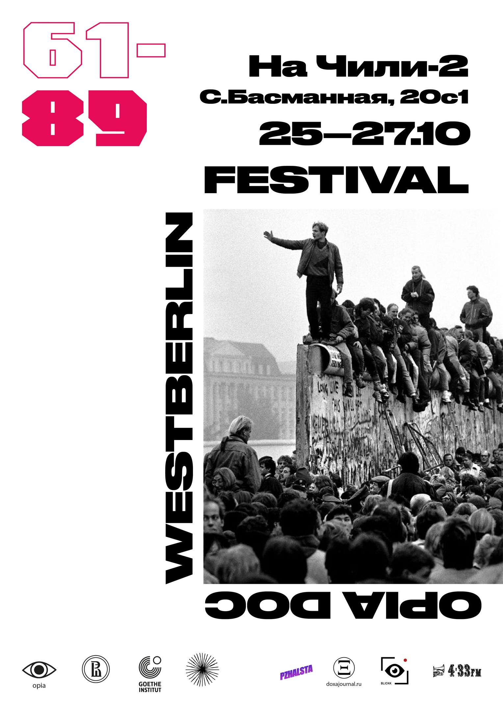

После просмотра чувство, будто моего сына в детсаду воспитательница обидела. Я про проект. Но дешевое вино, прогулки по центру и блинчики спасают положение.
Я ложусь спать и не чувствую, что прожила этот день с толком. Вычеркнуть его - и пейзаж на полотне жизни не изменится ни на йоту. Хотя, возможно, в нем станет меньше пассивной агресии и детских обид, физической боли и ментального бессилия. Я засыпаю и верю в то, что завтра все будет волшебнее.
 Про сегодняшний неинтересный день писать ничего не хочется, так что, пользуясь случаем, приглашаю всех на фестиваль документального кино про западный Берлин. Сегодня тоже показываем много чего интересного. Подробности здесь
Прикольно, если кто-то дочитал до этого момента. Лавина дел, связанных с последними этапами подготовки к экзаменам, накрывает. А еще я не умею пользоваться гитхабом. В связи с этим временно прекращаю ведение дневника и желаю всем вдохновения и гармонии с собой. Обнимаю крепко (прошу не считать фамильярностью).
Че по кайфу, то и делай Че по кайфу, то и делай Че по кайфу, то и делай Че по кайфу, то и делай Че по кайфу, то и делай Че по кайфу, то и делай Че по кайфу, то и делай Че по кайфу, то и делай Че по кайфу, то и делай Че по кайфу, то и делай Че по кайфу, то и делай Че по кайфу, то и делай Че по кайфу, то и делай Че по кайфу, то и делай
Че по кайфу, то и делай Че по кайфу, то и делай Че по кайфу, то и делай Че по кайфу, то и делай Че по кайфу, то и делай Че по кайфу, то и делай Че по кайфу, то и делай Че по кайфу, то и делай Че по кайфу, то и делай Че по кайфу, то и делай Че по кайфу, то и делай Че по кайфу, то и делай Че по кайфу, то и делай Че по кайфу, то и делай<
Че по кайфу, то и делай Че по кайфу, то и делай Че по кайфу, то и делай Че по кайфу, то и делай Че по кайфу, то и делай Че по кайфу, то и делай Че по кайфу, то и делай Че по кайфу, то и делай Че по кайфу, то и делай Че по кайфу, то и делай Че по кайфу, то и делай Че по кайфу, то и делай Че по кайфу, то и делай Че по кайфу, то и делай<